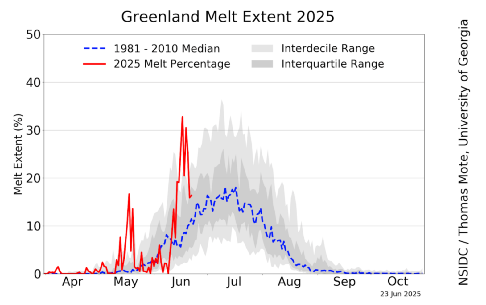

ARTICLE
What do we know already? A look at data from the ice sheet, what it shows and what is missing.
Whilst CosmicRay looks at the future of the Greenland Ice Sheet, decades of research help us understand the ice sheets past and present, monitoring and measuring several parts of the largest northern ice sheet. Even with this knowledge, there is still a lot for us to figure out and uncover.
The ice sheet is melting rapidly, predominantly due to global warming and greenhouse gas emissions, but how has this been shown through data?
Glacial Loss
This data has helped us track the general impact of climate change on the ice and the subsequent changes in mass. For example, Greenland is covered with glaciers - slow-moving rivers of ice - making up 21% of the total ice loss, so their health is one critical aspect of the ice sheet.
To best understand this component of Greenland, NASA set up monitoring satellites, keeping track of 207 glaciers and recording their behaviour.
Here is what they found:

(Photo courtesy T. Mote/National Snow and Ice Data Center)
These results have shown that the majority of the glaciers have retreated significantly, experiencing significant losses as a result of global warming. As well as adding to the total ice loss, this poses a massive issue to the wildlife, such as the polar bears and foxes, as this only increases the amount of habitat they have lost.
Glacial retreat is not a standalone issue, it is following the trend of the entire sheet suffering from ice loss.
How Much Of The Ice Sheet Is Melting?
As well as mass data, data on the extent of surface melting, or the amount of ice melting on a given day is being monitored by the US National Snow and Ice Data Center (NSIDC), providing up-to-date data on how much of the ice sheet has been melting daily.
The ice found in ice sheets is primarily freshwater, meaning there is no salt. When this ice melts into the ocean, it clashes with the saltwater and dilutes the salt levels. Ocean wildlife relies on these conditions, not only because particular species can only survive in saltwater - but because saltiness influences the ocean’s currents. For the wildlife, this will mean that they may get forced into environments they are not suited for, these currents also directly impact fishing communities. These communities rely on currents bringing them food and therefore their livelihood.
This data allows us to visualize the increase in melting area that has occurred as a result of global warming.
So far this year, the melt percentage has reached peaks that exceed historical averages, showing that when temperatures increase, the ice feels a dramatic change. This data shows a worryingly high trend for this year, specifically with an earlier peak in May and June.
However, despite all this data, we face several difficulties in collecting data from parts of the ice sheet, meaning it is difficult to get the whole picture.
What We Don’t Know: Inside The Ice Sheet
Even with our current satellites and monitoring stations, there exists one part of Greenland that remains misunderstood: the centre of the ice sheet.
All of the Greenland monitoring stations are situated on the edges of the ice sheet. This is useful for stations that need to be monitored, as they are much easier to access, but how are we supposed to monitor the centre?
As previously mentioned, Greenland is full of glaciers and hard-to-reach areas, meaning that getting to the centre is difficult, even if just to set up a remote station. The glaciers themselves, and the shapes carved out by the ice make traversing extremely difficult.
It is possible to set up stations that do not require human interference, for example by dropping a sensor to the bottom of a glacier, but these often require retrieval to see the data, which proves difficult when humans are involved.
Additionally, weather conditions in Greenland make it challenging to set up equipment and stations. Many weather monitoring stations have fallen due to being unable to withstand the harsh cold and snow.
Below is an interactive map with the locations of current monitoring stations mapped on top:
If it were not for the issues associated with measuring the majority of the Greenland Ice Sheet, it would be possible to use on-the-ground data as opposed to satellite data to help map this part of the world, as satellite imagery often misses what is happening beneath the ice.
Without complete data, we often have to rely on models, estimates or averages. Models are used to help estimate, understand and predict data and observations when specific data is not available. Whilst these are backed up by solid data, direct data would make these models much more trustworthy, accurate, and generally better, especially when countries are under threat of rising sea levels.
Reaching these parts of the ice sheet is critical, as understanding the gaps that exist in Greenland’s data will help improve future predictions, improve existing models and help prepare for any consequences. The ARIA project, which CosmicRay is under, aims to better understand the Greenland Ice Sheet through their monitoring and data collection, with an ultimate aim of improving the models.